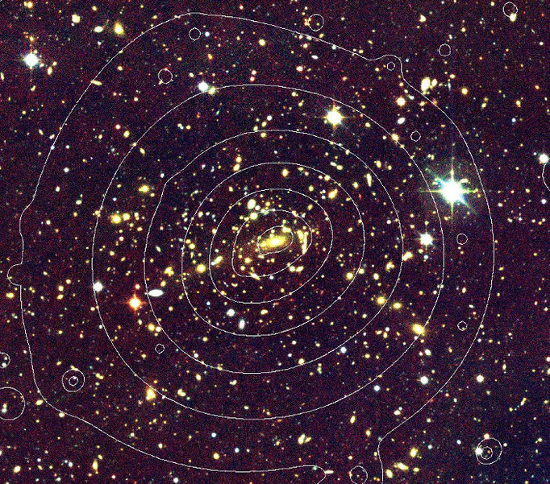

Clusters of galaxies contain up to several thousand galaxies moving at different velocities in the common gravitational field (force field due to gravity and certain inertial effects). According to the current state of research, they are the largest structures in the universe that are gravitationally bound. The main part of the mass of the galaxy clusters is dark matter (about 85%). They are also penetrated by a thin gas, 10 to 100 million Kelvin hot, which can be observed through its X-rays. This gas makes up about 13% of the mass of a galaxy cluster. The remaining 2% of the visible mass is present in the stars and planets of the galaxies. In the middle of galaxy clusters there is often a huge elliptical galaxy.
